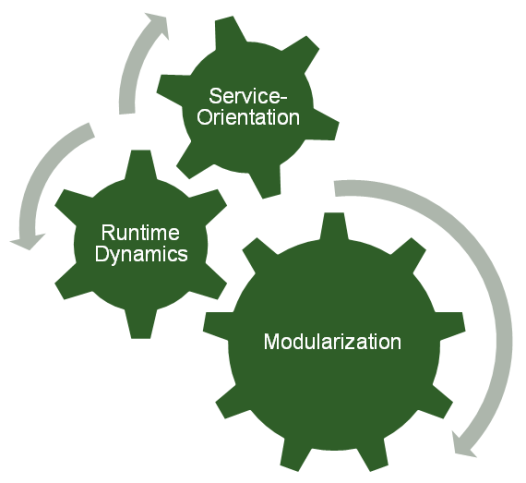
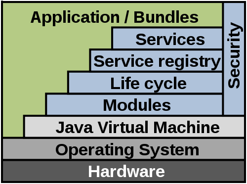
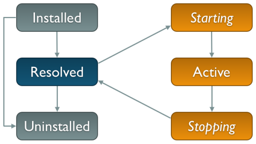
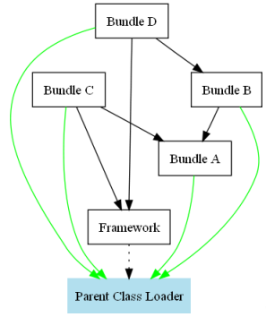

Introduction to OSGi
Harald Westphal
http://github.com/hwestphal
«
{{activeSlide + 1}} / {{totalSlides}}
»
Topics
- Basics
- Module system
- Services
- Server-side OSGi
- Implementations and tools
- Live demo
History
- Open Services Gateway initiative
- First release (R1) May 2000
- Latest release (R5) June 2012
- ~2003: Eclipse selected OSGi as core runtime (RCP)
- ~2007: First server-side adoptions
Features

Architecture

Module System
- Basic blocks: Bundles (mostly JARs)
- Have a lifecycle
- Export packages (with a distinct version)
- Import packages (of a given version range)
- OSGi runtime resolves dependencies
- Framework is a bundle itself (sytem bundle)
Bundle Lifecycle

Bundle Class Loading
- Network instead of parent delegation

Bundle Manifest
- Additions to
META-INF/MANIFEST.MF
- Contains bundle meta-data
Bundle Classpath
- Default classpath is
.
- Can be customized (e.g. for embedded JARs)
Bundle Entries vs. Resources
- Goal: access non-class files that are part of the bundle
- OSGi makes a distinction between resources and entries
- Used for images, HTML pages, ...
Bundle Fragments
- Add-ons to existing bundles
- Don't have a lifecycle on their own
- Extend the host bundle's content and meta-data
- Typical usecases: test fragments, localized resources, native libraries
Bundle Activator
- Piece of code which is executed on bundle activation and deactivation time
- Access to the bundle context and the whole framework runtime dynamics
Okay, it's demo time!